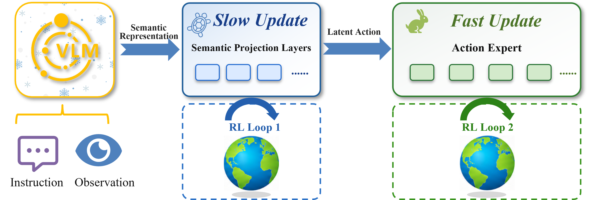
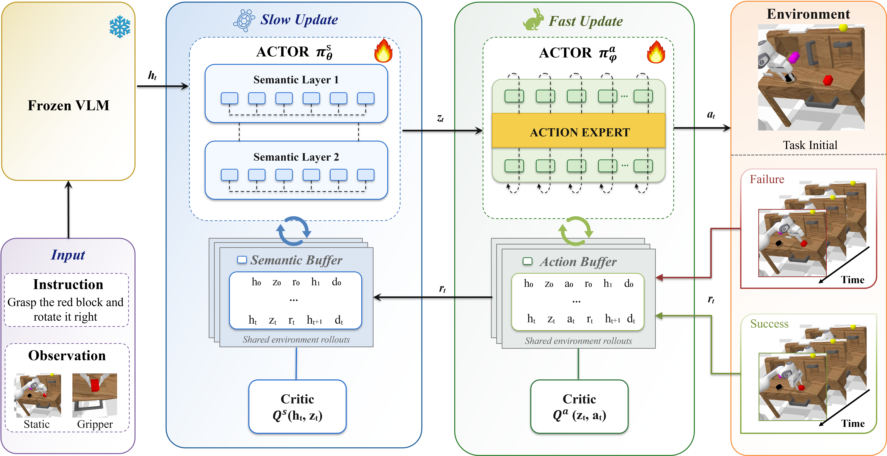
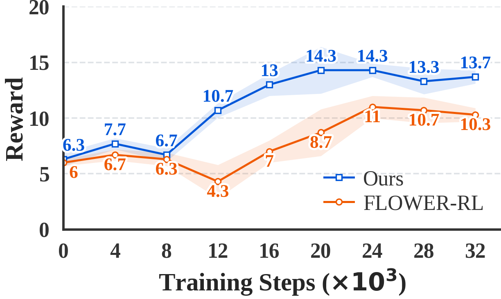
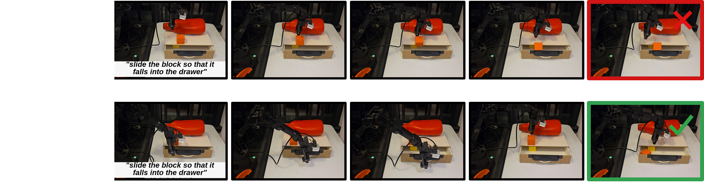
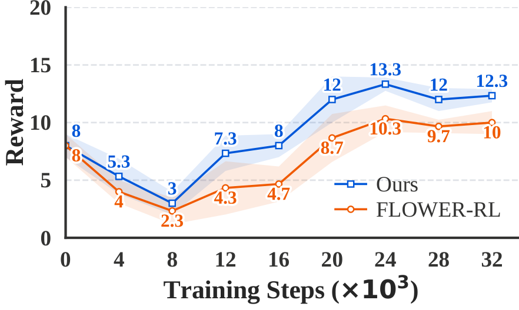
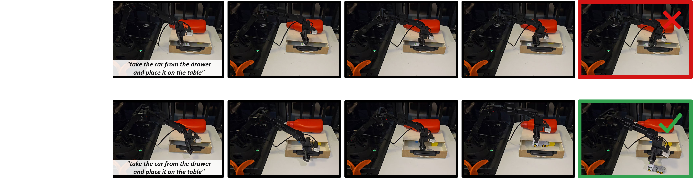

Frozen backbone
The pretrained vision-language backbone remains frozen during RL post-training.
Anonymous Project Page
A semantic-action decoupled, two-timescale RL post-training framework that adapts the semantic projection layer and low-level action expert through dedicated RL optimization loops with module-specific update frequencies.

Video
A three-minute presentation of the motivation, method, and experimental evaluation.
Abstract
Vision-language-action (VLA) models are commonly adapted to downstream manipulation tasks via supervised fine-tuning (SFT) or online reinforcement learning (RL) post-training. SFT is prone to distribution mismatch, and existing RL approaches typically apply a single, uniform update strategy to all model components, ignoring their distinct functional roles.
We propose TEMPO, a semantic-action decoupled, two-timescale RL post-training framework for VLA models. TEMPO freezes the pretrained vision-language backbone to preserve general semantic representations, and restricts adaptation to two components with dedicated RL optimization loops: the semantic projection layer and the low-level action expert. We update them at different rates—the semantic projection layer infrequently, to keep the latent action stable, and the action expert frequently, to rapidly incorporate control feedback from online interaction.
This decoupling RL fine-tuning strategy prevents fast policy updates from destabilizing high-level semantic representations while still allowing the action expert to learn efficiently from online feedback. Experiments on the CALVIN benchmark and real-world manipulation tasks demonstrate that TEMPO consistently outperforms both pretrained state-of-the-art VLA models and the RL post-training baseline, while reaching and maintaining higher evaluation rewards on two real-world tasks.
Method
The frozen VLM encodes the instruction and observation into the multimodal semantic representation ht. The semantic projection layer transforms ht into the latent action zt, and the action expert maps zt to the robot action chunk at. TEMPO constructs two separate module-level TD3 loops, each with its own replay buffer, twin critics, target networks, and optimizer. Both loops use shared environment rollouts and the same sparse task reward.

The pretrained vision-language backbone remains frozen during RL post-training.
A dedicated TD3 loop optimizes the semantic projection layer from ht to the latent action zt.
A separate TD3 loop optimizes the action expert from zt to executable robot action chunks.
Simulation Results
Following the standard CALVIN protocol, columns 1–5 report success rates (SR) for completing the first k tasks in a five-instruction chain, where k = 1, …, 5. Avg. Len. is the average number of consecutively completed tasks from the beginning of each chain.
| Method | 1 | 2 | 3 | 4 | 5 | Avg. Len. |
|---|---|---|---|---|---|---|
| RT-1 | 53.3 | 22.2 | 9.4 | 3.8 | 1.3 | 0.90 |
| RoboFlamingo | 82.4 | 61.9 | 46.6 | 33.1 | 23.5 | 2.47 |
| SuSIE | 87.0 | 69.0 | 49.0 | 38.0 | 26.0 | 2.69 |
| GR-1 | 85.4 | 71.2 | 59.6 | 49.7 | 40.1 | 3.06 |
| 3D Diffuser Actor | 92.2 | 78.7 | 63.9 | 51.2 | 41.2 | 3.27 |
| OpenVLA | 91.3 | 77.8 | 62.0 | 52.1 | 43.5 | 3.27 |
| CLOVER | 96.0 | 83.5 | 70.8 | 57.5 | 45.4 | 3.53 |
| RoboDual | 94.4 | 82.7 | 72.1 | 62.4 | 54.4 | 3.66 |
| π0 | 93.8 | 85.0 | 76.7 | 68.1 | 59.9 | 3.84 |
| π0.5 | 92.7 | 84.6 | 77.3 | 69.3 | 61.2 | 3.85 |
| UP-VLA | 92.8 | 86.5 | 81.5 | 76.9 | 69.9 | 4.08 |
| RoboVLMs | 98.0 | 93.6 | 85.4 | 77.8 | 70.4 | 4.25 |
| Seer-Large | 96.3 | 91.6 | 86.1 | 80.3 | 74.0 | 4.28 |
| VPP | 96.5 | 90.9 | 86.6 | 82.0 | 76.9 | 4.33 |
| UNIVLA | 98.9 | 94.8 | 89.0 | 82.8 | 75.1 | 4.41 |
| DeFI | 97.9 | 94.2 | 90.7 | 87.0 | 81.2 | 4.51 |
| FLOWER | 99.4 | 95.8 | 90.7 | 84.9 | 77.8 | 4.49 |
| FLOWER-RL | 99.4 | 96.7 | 91.3 | 85.5 | 78.4 | 4.51 |
| TEMPO (Ours) | 100.0 | 97.1 | 92.9 | 87.1 | 81.7 | 4.59 |
TEMPO achieves the best overall long-horizon performance on CALVIN ABC→D, ranking first in SR5 and Avg. Len. with 81.7% and 4.59, respectively.
Ablation and Analysis
The analyses follow the same CALVIN five-instruction-chain evaluation protocol as the main comparison.
| Variant | 1 | 2 | 3 | 4 | 5 | Avg. Len. |
|---|---|---|---|---|---|---|
| Ours (full) | 100.0 | 97.1 | 92.9 | 87.1 | 81.7 | 4.59 |
| w/o projection update | 99.9 | 96.8 | 91.6 | 86.1 | 79.8 | 4.54 |
| w/o expert update | 99.9 | 97.2 | 92.2 | 85.6 | 79.6 | 4.55 |
The w/o projection update variant keeps the semantic projection layer fixed and updates only the action expert, whereas the w/o expert update variant keeps the action expert fixed and updates only the semantic projection layer. Neither variant matches full TEMPO in SR5 or Avg. Len. Full TEMPO achieves the highest SR5 and Avg. Len., indicating that the semantic projection layer and action expert provide complementary adaptation capabilities.
| fa:fs | 1 | 2 | 3 | 4 | 5 | Avg. Len. |
|---|---|---|---|---|---|---|
| 1:1 | 98.6 | 94.8 | 90.0 | 84.5 | 77.7 | 4.46 |
| 5:1 | 100.0 | 97.1 | 92.9 | 87.1 | 81.7 | 4.59 |
| 10:1 | 99.4 | 96.6 | 92.5 | 87.4 | 81.2 | 4.57 |
The 5:1 and 10:1 settings outperform the equal-frequency 1:1 setting. Performance therefore depends not only on applying RL updates, but also on the relative update frequencies assigned to the two modules.
| RL task-set size | 1 | 2 | 3 | 4 | 5 | Avg. Len. |
|---|---|---|---|---|---|---|
| 1 | 99.4 | 96.6 | 92.5 | 87.4 | 81.2 | 4.57 |
| 2 | 99.6 | 97.2 | 91.9 | 86.0 | 79.2 | 4.54 |
| 4 | 99.9 | 96.9 | 92.0 | 86.8 | 80.1 | 4.56 |
| 7 | 99.7 | 97.1 | 92.4 | 85.5 | 79.1 | 4.54 |
| 34 | 99.6 | 96.8 | 92.2 | 86.3 | 79.2 | 4.54 |
Under the fixed 10:1 update-frequency ratio, the task-set size denotes the number of selected subtasks among CALVIN’s 34 subtasks, rather than the instruction-chain length. Performance does not improve monotonically as the task set expands.
Real-World Experiments
We conduct multi-stage language-conditioned manipulation experiments using a 6-DoF Synria Alicia-D robot arm, a single-DoF gripper, an Intel RealSense D435i third-person camera, and a wrist-mounted D405. Both tasks require the robot to satisfy a prerequisite before interacting with the target object. We collect 60 demonstrations per task, resulting in 120 episodes before online RL post-training.
For each random seed, 20 trials are evaluated at every checkpoint and the binary task rewards are summed, assigning 1 to success and 0 to failure. Shaded regions denote one standard deviation across three independent random seeds. Across both tasks, evaluation rewards fluctuate early and then improve and stabilize. TEMPO reaches and maintains higher reward levels than FLOWER-RL during the later stages of post-training.




When the drawer is already fully open, FLOWER-RL and TEMPO achieve comparable performance. Their performance gap mainly emerges when the limited drawer opening leaves insufficient space for direct target-object manipulation.
Citation
The manuscript and anonymous code repository are available through the links below.
@misc{anonymous2026tempo,
title = {TEMPO: Semantic-Action Decoupled RL Post-Training for Vision-Language-Action Models},
author = {Anonymous Authors},
year = {2026},
note = {Manuscript under review}
}